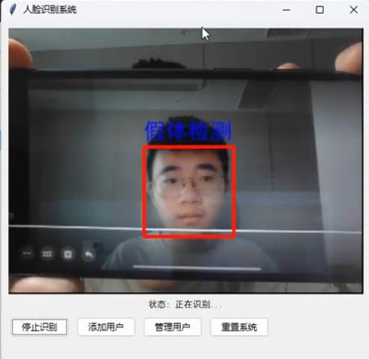
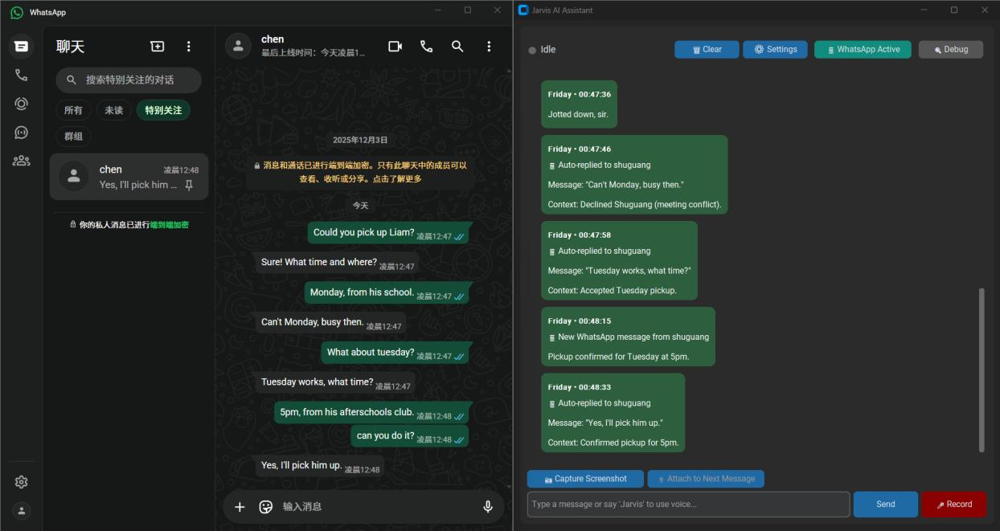

I'm a Computer Science student at New York University (Class of 2030), drawn to problems at the intersection of computer vision, machine learning, and real-world impact.
I've trained models that detect coal rock with 97% accuracy, built iOS apps protecting civil rights, won a $20,000 hackathon, and built a personal AI assistant modeled after Iron Man's J.A.R.V.I.S. I speak English and Mandarin natively.
Technologies
ICPC Regional Contest ▶ Vlog
International Collegiate Programming Contest · 2025
ICPC Asia East Continent Final
International Collegiate Programming Contest · 2024
Hackathon Shipyard 2026 Winner
BookaCook · $20,000 Prize
Codeforces International Master
Competitive Programming
USACO Platinum Division
USA Computing Olympiad · 2025
Developed a coal rock detection and separation algorithm using self-trained ML models and OpenCV. Achieved 97% overall accuracy in production industrial environments.
Built a facial recognition and liveness detection system that identifies phone screen reflections, distinguishing live persons from photo/video spoofing attempts in industrial safety applications.
Designed an algorithm to auto-categorize a legacy library of 5,000+ videos, improving retrieval efficiency by 7%.
iOS Recipe Platform · 100+ Downloads · $20,000 Hackathon Winner
Full-stack iOS recipe platform backed by SQLite, with Python web crawlers indexing 1,200+ cookbooks and 1M+ recipes, and ISBN barcode scanning to catalog physical cookbooks. Multi-model AI pipeline: TikTok API ingestion → Groq Whisper speech-to-text → GPT-4o vision for ingredient recognition → Llama 3 for structured recipe generation, combined with hybrid collaborative-filtering recommendations.
Anti-spoofing system trained to detect phone screen reflections on faces — the subtle glare patterns that appear when someone holds a photo or video. Enables real-time distinction between live persons and spoofing attempts using custom CNN models. Open-sourced with full documentation.

Voice-Controlled Personal AI Modeled After Iron Man's J.A.R.V.I.S.
Built a comprehensive personal AI assistant with WhatsApp integration that analyzes message history and auto-replies based on your communication style. Features always-on voice wake word detection (Porcupine), calendar conflict management, and full system control — not just command execution, but judgment.

Jarvis auto-replying to WhatsApp messages based on learned communication patterns
iOS · 80+ GitHub Stars · 80+ Active Users
Civic tech iOS app that uploads video to secure cloud storage while recording — not after. Even if the phone is confiscated mid-recording, everything is already preserved. Password-protected vault with end-to-end encryption. Reached 80+ active users with confirmed evidence preservation in high-stakes situations.
Transformer Architecture · Deep Learning
Built a custom large language model architecture from the ground up to understand transformer mechanics and computational constraints. Explored hardware-software optimization challenges in deep learning and investigated resource-efficient training methods.
I'm always open to new opportunities, collaborations, or just a good conversation about tech.